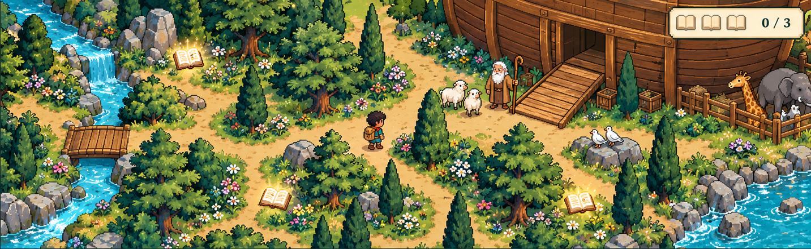
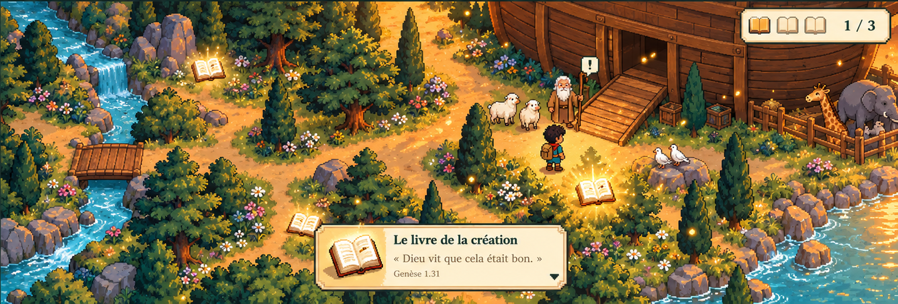
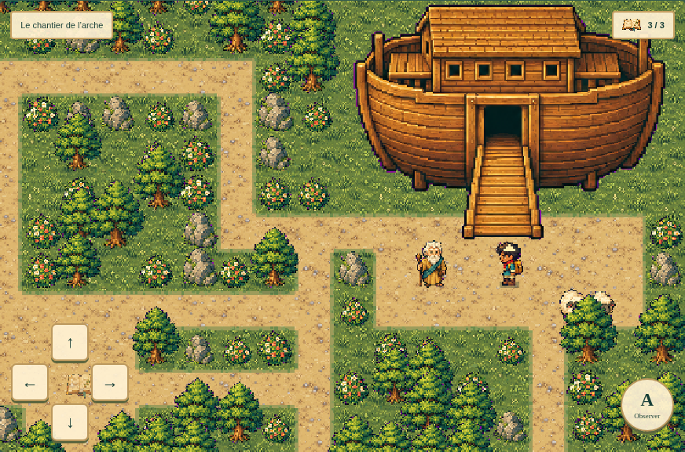

BIBLE AVENTURE · PIXEL ART LAB · PILOTE NOÉ
Le jardin de l’arche
Un chapitre à explorer, trois livres à découvrir et une rencontre avec Noé. Ressources originales, personnage animé, commandes tactiles et sauvegarde isolée.
Branche expérimentale · aucun déploiement de productionLa cible artistique




Le jeu effectivement exécuté

Ce qui rejoint la cible, ce qui reste à travailler
| Dimension | Résultat du pilote | Écart restant |
|---|---|---|
| Personnages | Explorateur original, 16 poses réelles ; Noé, moutons et colombes en PNG transparents. | Noé et les animaux sont fixes. Pas de scène d’embarquement animée. |
| Environnement | Cèdres détaillés, arbustes fleuris, rochers, rive, passerelle, textures de sol et arche. | Chemins plus géométriques que les concepts ; davantage de variantes peintes renforcerait l’aspect naturel. |
| Composition | Caméra de suivi, cadrage spécifique devant l’arche, profondeur par tri des pieds. | Le mobile garde un champ plus étroit ; les concepts offrent une composition panoramique plus riche. |
| Effets | Scintillements des livres, particules de découverte, ondulations, petits sons facultatifs. | Pas de lumière dynamique ni de cinématique. Les effets restent volontairement légers. |
| Gameplay | Labyrinthe jouable, chemin tactile, maintien des flèches, trois livres, carnet, question, médaille et reprise. | Un seul chapitre. Pas de nouvel habillage des 49 autres labyrinthes. |
Le pilote constitue une avancée concrète vers le niveau de finition recherché. Il ne prétend pas égaler la richesse complète de Phantasy Codex Adventure. La comparaison porte sur la qualité des ressources et l’itération de gameplay ; aucune de ses images n’a été réutilisée.
Quatre formats testés


Les preuves et les sources
Résultats Playwright · Validation des sprites · Version autonome et commandes · Prompts ImageGen · Inventaire · Guide graphique · Choix techniques · Plan de travail
Tests navigateur disponibles et exécutés sous Chromium. ImageGen disponible et utilisé. Aucun test sur un ancien Android physique ; aucun audit WCAG complet. La production et sa clé de sauvegarde ne sont pas modifiées par le pilote.